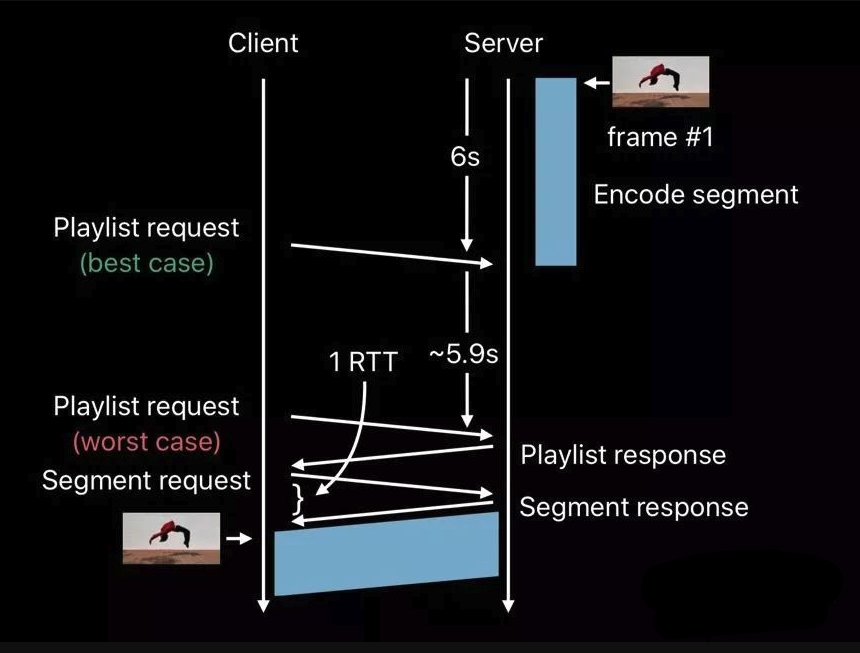
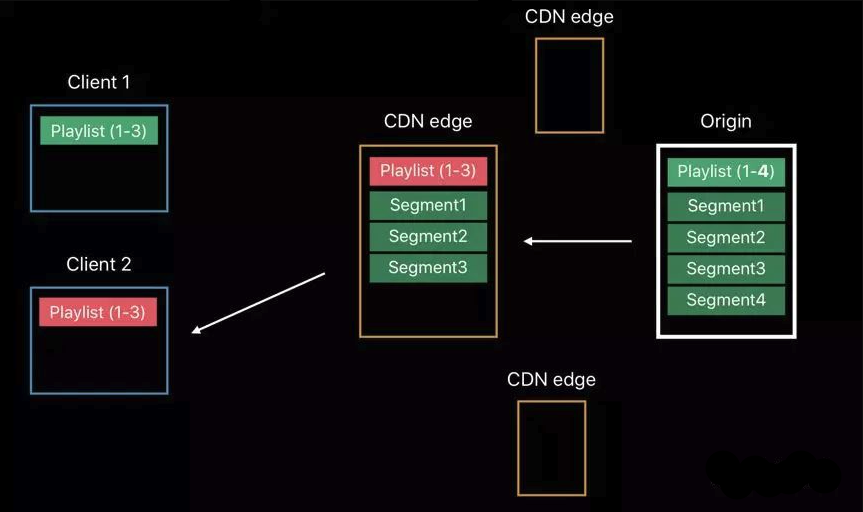

低延迟 hls 调研
一、目标 1. 1~2秒延迟； 2. 不影响 hls 原有特性，如码率自适应、CDN 分发等； 3. 完全向后兼容； 二、常规 hls 方案 不考虑 CDN 的情况  客户端播放 hls 的流程如上图： 1. 服务端先生成 6…
低延迟 hls 调研
一、目标
- 1~2秒延迟；
- 不影响 hls 原有特性，如码率自适应、CDN 分发等；
- 完全向后兼容；
二、常规 hls 方案
不考虑 CDN 的情况

客户端播放 hls 的流程如上图：
- 服务端先生成 6s 的分片，此过程会导致延时 +6s；
- 理想情况下，客户端在分片生成后立即请求。但最坏情况，客户端需要再等 6s 才会请求 m3u8 文件（轮询）。此过程也会导致延时 +6s；
- 客户端拿到 m3u8 后，解析到 ts 分片地址，然后再次请求 ts。此过程耗费 2rtt；
综上，传统 hls 延时时间为 12s+2rtt；
考虑 CDN

在 CDN 场景下，当客户端 1 第一次请求到 CDN 时，由于 m3u8 尚未被缓存，此时回源获取到包含 1-3 分片的 m3u8 播放列表。之后，源站生成了分片 4，客户端 2 再请求 CDN 时，还是只会返回 1-3 分片，因为 CDN 不知道源站的播放列表已经更新。此时延时会更大。
三、低延时方案
要求
源站、CDN 和客户端支持 HTTP/2
概述
低延迟 hls 是对传统 hls 的扩展，并向后兼容。主要做了一下五个方面的提升：
- 降低发布延时
- 优化客户端发现新分片的方式
- 消除额外往返
- 减少传输开销
- 快速切换码率
降低发布延时
降低发布延时的方式是允许服务器在主分片准备好之前，先发布其中部分内容。假设当前一个分片时长为 6s，可将其切成 30 个小部分，每部分包含 200ms，可独立被客户端获取并播放。且当一个分片被全部生成后，其部分片段会被删除。
优化客户端发现新分片的方式
具体来说，就是在服务器上还没有新分片之前，客户端就已经发起对该分片的请求。一旦服务器上生成了该分片，就可以立即推送给客户端。此种方式可以在小于 1rtt 的时间内发现新分片。
消除额外往返
客户端第一次请求到全量播放列表后，会和服务器建立起一条连接。此后当有新分片生成时，服务器会主动将 m3u8 和 ts 分片推送给客户端，减少了一次轮询的 rtt 时间。
由于服务器推送方式在 CDN 推送场景下不友好，因此该方案已废除。取而代之的是请求阻塞方式。具体来说，就是客户端根据现有序号，计算出下一个 ts 分片的序号并请求服务器，服务器会阻塞请求，直到该分片准备好再返回。
减少传输开销
客户端第一次请求 m3u8 时，服务器会返回全量分片列表。此后客户端只会关心 m3u8 的增量部分，因此发起的是增量请求。返回数据相比原始全量数据会大大减少，以便于放在一个 MTU 数据包内返回。
快速切换码率
由于是增量更新 m3u8，当 CDN 上有两种码率的流时，每次返回时可以携带额外信息。因此当客户端需要切换到不同码率时，就可以直接切换。
四、结论
- 常规 hls 相比 flv 的优势是多码率切换，劣势就是延时高。
- 现在 hls 增加了低延时，flv 也有快手做的 las 做码率切换，大体上来说两个应该差不多。
- 但从成熟度来看，hls 低延时目前还是 beta 版，直接用于线上项目可能会有风险，可以等正式规范出来尝试再进行。las 据说快手已经用在线上了，稳定性应该 OK；
- 从延迟指标上来说，hls 只能在苹果今年 9 月发布的新系统（iOS14、MacOS big sur）上使用，目前应该还没有相关工具可以测试。las 可以实现帧级别无延迟的情况下切换码率；
- 从客户端覆盖程度上说，hls 低延时方案，初期只能在苹果设备上使用，其他设备跟进支持可能需要一段时间。las 目前也只支持 web 端；
- 从服务端支持程度上看，hls 需要对源站、CDN 做改造，las server 目前只支持 srs，且多个不同码率的流需要保持 I 帧的 pts 完全对齐；
所以，我的初步结论是，这两个方案，短期内都不太适合线上大规模应用。但可以保持关注，尝试小范围内应用，比如 web 端实现低延时+多码率方案。